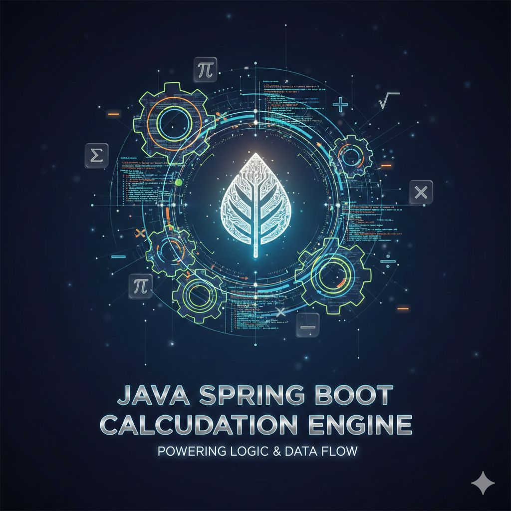

View on GitHubI recently completed a regulatory calculation engine designed for banking-grade compliance reporting — a system that could realistically operate in a regulated environment.
Before writing code, I approached this as a risk and reliability problem, not just a technical one.
The Problem I Set Out to Solve
Banks need to generate regulatory metrics on strict schedules (bi-weekly, monthly, and annually) using large volumes of financial data. These calculations must be:
- Repeatable and explainable
- Auditable down to individual exposures
- Resilient to failures
- Aligned with both global frameworks and local regulatory expectations
This system was designed with Basel III standards in mind while also accounting for regulatory interpretations applied by institutions such as the Central Bank of Lesotho, where capital adequacy, liquidity, and asset quality thresholds are more conservative than global minimums.
What I Built
The result is a Spring Boot–based regulatory calculation engine supporting:
Basel III Metrics
- Risk-Weighted Assets (RWA)
- Capital Adequacy Ratio (CAR)
- Liquidity Coverage Ratio (LCR)
- Non-Performing Loans (NPL)
- IFRS 9 Expected Credit Loss (ECL)
The engine also supports regulatory overrides aligned to Lesotho’s context, including:
- Higher capital thresholds
- Earlier NPL classification
- Stricter provisioning rules
Spring Batch Orchestration
The system executes through an 11-step Spring Batch job that snapshots data, validates inputs, runs calculations, and finalizes results — all transactionally, idempotently, and recoverably.
Full Auditability and Traceability
Every metric can be traced back to:
- The exact snapshot in time
- The calculation rule used
- The input data
- Loan-level components
This is the level of explainability regulators expect when they ask: “How did you arrive at this number?”
Why This Matters
What interested me most wasn’t just implementing formulas — it was designing a system that:
- Can survive re-runs without corrupting data
- Produces the same result for the same inputs
- Supports future engineers without tribal knowledge
- Reflects how real financial institutions operate
Strong typing, well-defined transaction boundaries, and established enterprise patterns were deliberate choices, because in regulated environments, maintainability is a compliance feature.
Final Thoughts
This project reinforced something I strongly believe:
Good financial systems are built at the intersection of engineering discipline, regulatory understanding, and long-term thinking.
I enjoyed working at that intersection and I’m keen to keep building systems where correctness, transparency, and resilience genuinely matter.